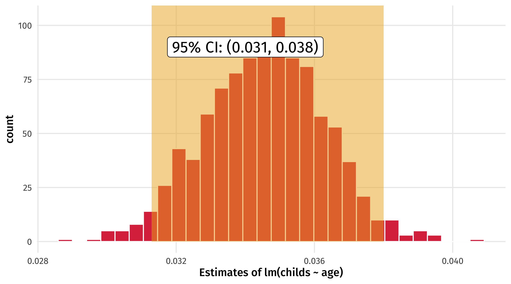
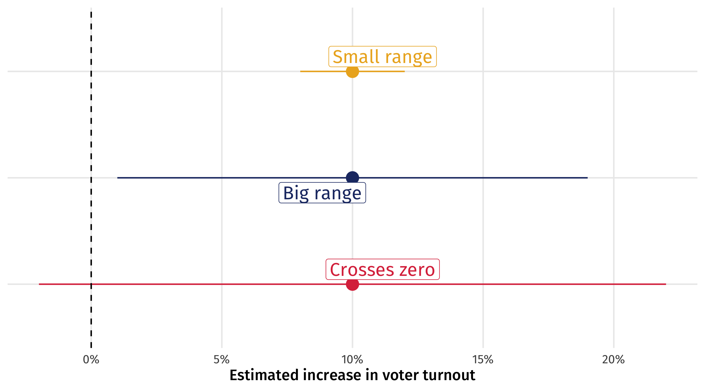
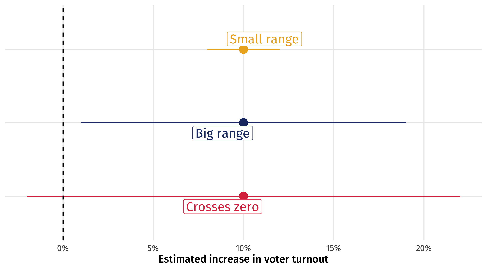
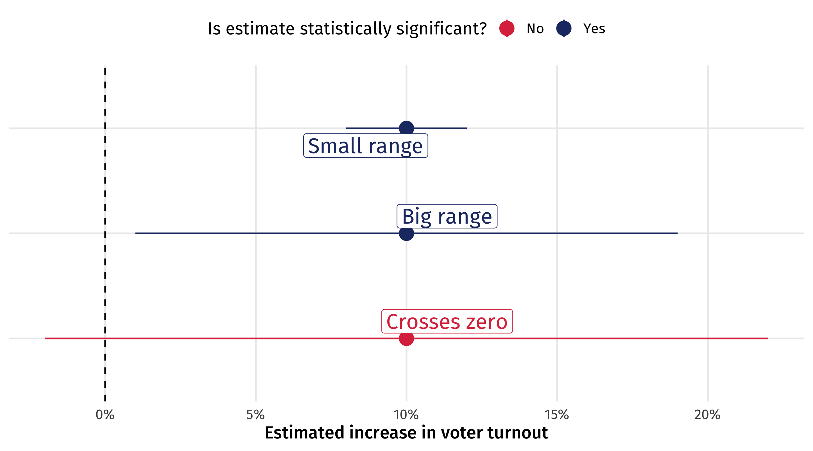
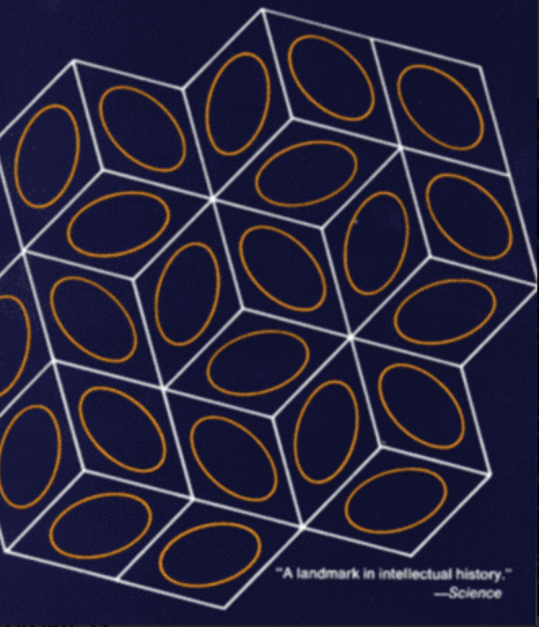
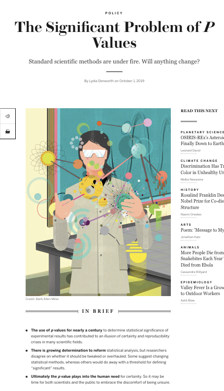
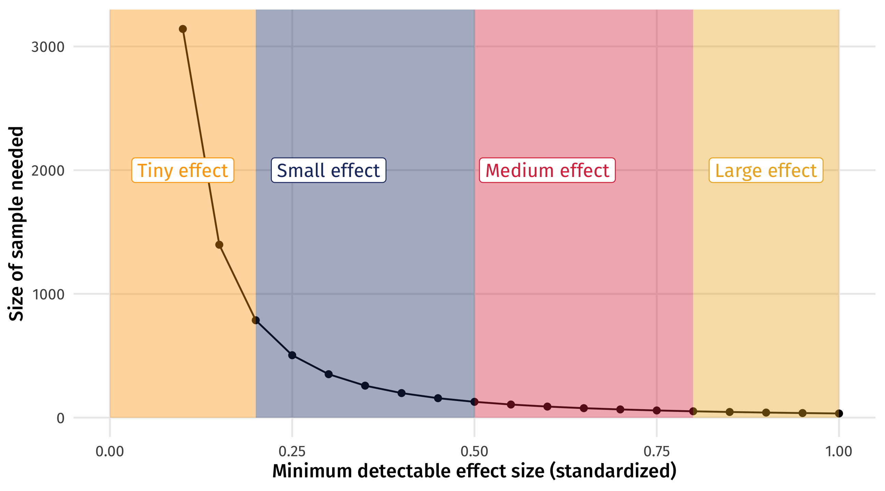
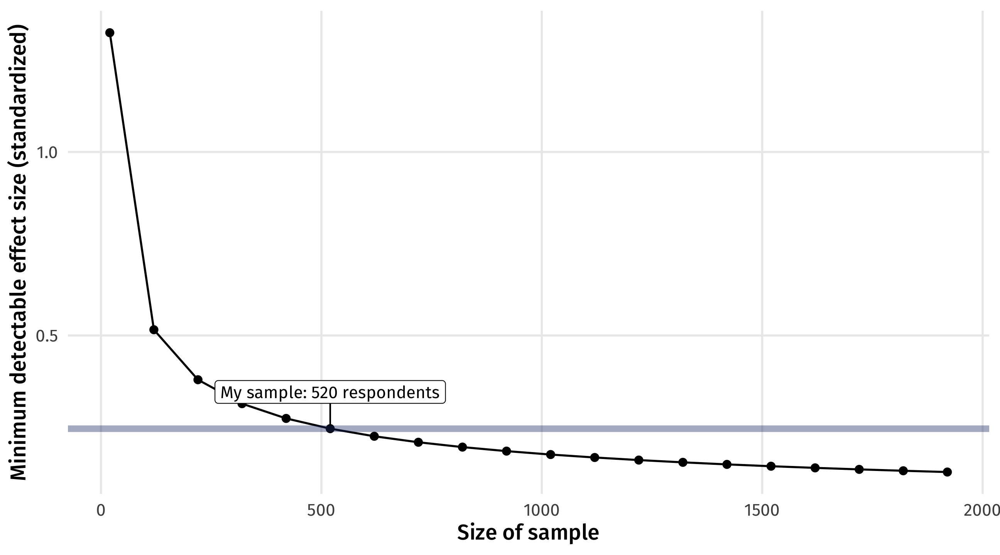
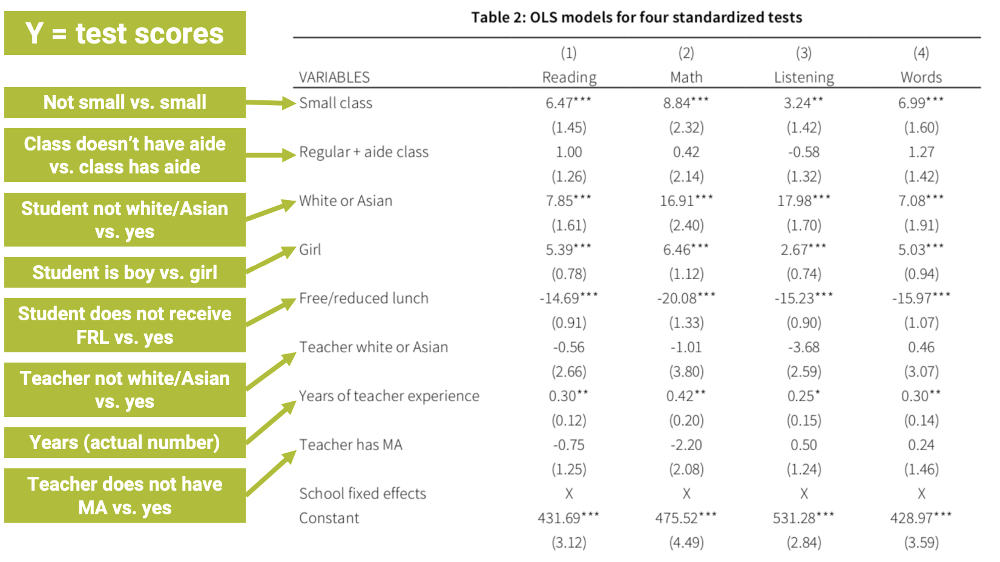

| Number of kids | |
|---|---|
| (Intercept) | 0.153 |
| (0.086) | |
| age | 0.035 *** |
| (0.002) | |
| nobs | 2849 |
| *** p < 0.001; ** p < 0.01; * p < 0.05. | |
POL51
University of California, Davis
August 26, 2026
TURN IN YOUR DRAFTS!! WE HAVE A PEER REVIEW DUE WED.
More on the confidence interval
Statistical Significance
Pulling it all together
Say we wanted to know the relationship between number of kids and age:
| Number of kids | |
|---|---|
| (Intercept) | 0.153 |
| (0.086) | |
| age | 0.035 *** |
| (0.002) | |
| nobs | 2849 |
| *** p < 0.001; ** p < 0.01; * p < 0.05. | |
We can simulate uncertainty in our estimate by bootstrapping
| Bootstrap | Coefficient | Estimate |
|---|---|---|
| 1 | age | 0.0367 |
| 2 | age | 0.0327 |
| 3 | age | 0.0316 |
| 4 | age | 0.0345 |
| 5 | age | 0.0360 |
| 6 | age | 0.0365 |
| 7 | age | 0.0337 |
| 8 | age | 0.0350 |
| 9 | age | 0.0354 |
| 10 | age | 0.0301 |
How much might our estimate of lm(childs ~ age) vary? Look at the standard error
| mean | standard_error |
|---|---|
| 0.0346 | 0.00172 |
You might report it is .0345, +/- 2 standard errors
Notice! This is what the (NUMBERS) mean in the regression table; they are the standard error of the coefficient estimate
We can also look at the 95% confidence interval – we are 95% “confident” the effect of age on the number of children a person has is between .032 and .038

lm() will estimate the standard error of regression estimates for us using the statistical theory approach, but the results are similar to boostrapping
We can also ask tidy for the 95% CI:
| term | estimate | std.error | statistic | p.value | conf.low | conf.high |
|---|---|---|---|---|---|---|
| (Intercept) | 0.576 | 0.0177 | 32.6 | 5.84e-182 | 0.541 | 0.611 |
| sexFemale | 0.0871 | 0.0234 | 3.72 | 0.000206 | 0.0412 | 0.133 |
conf.low and conf.high are the lower and upper bound of the 95% CI
The last (and most controversial) way to quantify uncertainty is statistical significance
We want to make a binary decision: are we confident enough in this estimate to say that it is significant?
Or are we too uncertain, given sampling variability?
Is the result significant, or not significant?
Imagine we run an experiment on TV ads, estimate the effect of the treatment on voter turnout, and the 95% confidence interval for that effect
The experiment went well so we are confident in causal sense, but there is still uncertainty from sampling
Three scenarios for the results: same effect size, different 95% CIs

Small range: great! Effect is precise; ads are worth it!
Big range: OK-ish! Effect could be tiny, or huge; are the ads worth it? At least we know they help (positive)
Crosses zero: awful! Ads could work (+), they could do nothing (0), or they could be counterproductive (-)

When the 95% CI crosses zero we are so uncertain we are unsure whether effect is positive, zero, or negative
Researchers worry so much about this that it is conventional to report whether the 95% CI of an effect estimate crosses zero
When a 95% CI for an estimate doesn’t cross zero, we say that the estimate is statistically significant
If the 95% CI crosses zero, the estimate is not statistically significant


You could have an estimate with a 95% CI that barely escapes crossing zero, and call that statistically significant
And another estimate with a 95% CI that barely crosses zero, and call that not statistically significant
That’s pretty arbitrary!
And it all hinges on the size of the confidence interval
if we made a 98% CI, or a 95.1% CI, we might conclude different things are and aren’t significant
The 95% CI is a convention; where does it come from?
Fisher (1925), who came up with it, says:
It is convenient to take this point [95% CI] as a limit in judging whether [an effect] is to be considered significant or not. (Fisher 1925)
But that other options are plausible:
If one in twenty [95% CI] does not seem high enough odds, we may, if we prefer it, draw the line at one in fifty [98% CI]… or one in a hundred [99% CI]…Personally, the writer prefers…[95% CI] (Fisher 1926)
So arbitrary; why make this binary distinction?
Sometimes we have to make the call:
when is a baby’s temperature so high that you should give them medicine?
100.4 is a useful (arbitrary) threshold for action
This is a huge topic of debate in social science, other proposals we can’t cover:

The stars (*) in regression output tell you whether an estimate’s confidence interval crosses zero and at what level of confidence
This is done with the p-value (which we don’t cover), the mirror image of the confidence interval
| Number of kids | |
|---|---|
| (Intercept) | 0.153 |
| (0.086) | |
| age | 0.035 *** |
| (0.002) | |
| nobs | 2849 |
| *** p < 0.001; ** p < 0.01; * p < 0.05. | |
*) p < .05 = the 95% confidence interval does not cross zero**) p < .01 = the 99% confidence interval does not cross zero***) p < .001 = the 99.9% confidence interval does not cross zero| Number of kids | |
|---|---|
| (Intercept) | 0.153 |
| (0.086) | |
| age | 0.035 *** |
| (0.002) | |
| nobs | 2849 |
| *** p < 0.001; ** p < 0.01; * p < 0.05. | |
The estimate is statistically significant at the…
*) p < .05 = the 95% confidence level**) p < .01 = the 99% confidence level***) p < .001 = the 99.9% confidence level| Number of kids | |
|---|---|
| (Intercept) | 0.153 |
| (0.086) | |
| age | 0.035 *** |
| (0.002) | |
| nobs | 2849 |
| *** p < 0.001; ** p < 0.01; * p < 0.05. | |
With the Law of Large Numbers and simulation (or theory), we can figure out how much data we would need to reliably estimate an effect of a particular size
This is called power analysis
How much statistical power do we have, or need to answer our research question?
You need less data to estimate larger effects

You can see how big (small) of an effect you can estimate given your data

When we control for a confounder, our treatment estimate can change a lot
In this case, shrinks closer to zero, but not perfectly; is there still “an effect”?
| Naive model | Model with controls | |
|---|---|---|
| (Intercept) | 10708.3 | -39456.6 *** |
| (6210.7) | (5223.1) | |
| bathrooms | 250326.5 *** | -5164.6 |
| (2759.5) | (3519.5) | |
| sqft_living | 283.9 *** | |
| (3.0) | ||
| nobs | 21613 | 21613 |
| *** p < 0.001; ** p < 0.01; * p < 0.05. | ||
One (controversial) approach is to notice that the effect has shrunk closer to zero, so much so that it is no longer statistically significant
| Naive model | Model with controls | |
|---|---|---|
| (Intercept) | 10708.3 | -39456.6 *** |
| (6210.7) | (5223.1) | |
| bathrooms | 250326.5 *** | -5164.6 |
| (2759.5) | (3519.5) | |
| sqft_living | 283.9 *** | |
| (3.0) | ||
| nobs | 21613 | 21613 |
| *** p < 0.001; ** p < 0.01; * p < 0.05. | ||
In the naive model, the effect of children on affairs is positive and statistically significant
But once we control for the right confounds, the effect of children on affairs is negative and not statistically significant
This is one way (the correct) controls can help us make better inferences
| Naive model | Controls model | |
|---|---|---|
| (Intercept) | 0.912 *** | 0.562 * |
| (0.251) | (0.264) | |
| childrenyes | 0.760 * | -0.033 |
| (0.297) | (0.358) | |
| yearsmarried | 0.112 *** | |
| (0.029) | ||
| nobs | 601 | 601 |
| *** p < 0.001; ** p < 0.01; * p < 0.05. | ||
